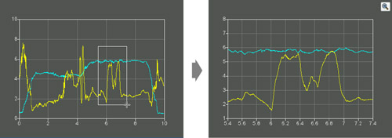
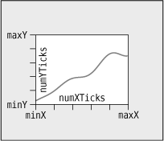
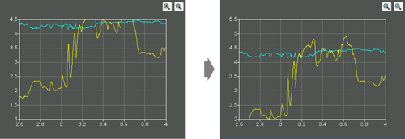
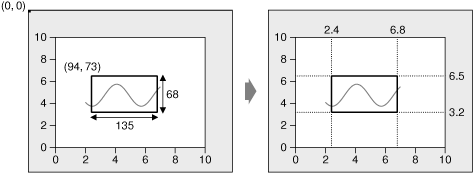
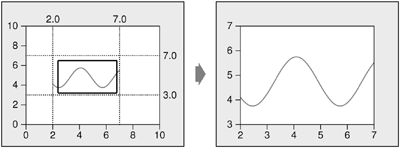

|
|
Double buffering is a GUI programming technique that consists of rendering a widget to an off-screen pixmap and copying the pixmap onto the display. With earlier versions of Qt, this technique was frequently used to eliminate flicker and to provide a snappier user interface.
In Qt 4, QWidget handles this automatically, so we rarely need to worry about widgets flickering. Still, explicit double buffering remains beneficial if the widget's rendering is complex and is needed repeatedly. We can then store a pixmap permanently with the widget, always ready for the next paint event, and copy the pixmap to the widget whenever we receive a paint event. It is especially helpful when we want to make small modifications, such as drawing a rubber band, without recomputing the whole widget's rendering over and over.
We will round off this chapter by reviewing the Plotter custom widget shown in Figures 5.7 and 5.9. This widget uses double buffering and demonstrates some other aspects of Qt programming, including keyboard event handling, manual layout, and coordinate systems.

For a real application that needed a graphing or plotting widget, rather than creating a custom widget as we are doing here, we would most likely use one of the third party widgets that are available. For example, we might use GraphPak from http://www.ics.com/, KD Chart from http://www.kdab.net/, or Qwt from http://qwt.sourceforge.net/.
The Plotter widget displays one or more curves specified as vectors of coordinates. The user can draw a rubber band on the image, and the Plotter will zoom in on the area enclosed by the rubber band. The user draws the rubber band by clicking a point on the graph, dragging the mouse to another position with the left mouse button held down, and releasing the mouse button. Qt provides the QRubberBand class for drawing rubber bands, but here we draw it ourselves to have finer control over the look, and to demonstrate double buffering.
The user can zoom in repeatedly by drawing a rubber band multiple times, zooming out using the Zoom Out button and then zooming back in using the Zoom In button. The Zoom In and Zoom Out buttons appear the first time they become available so that they don't clutter the display if the user doesn't zoom the graph.
The Plotter widget can hold the data for any number of curves. It also maintains a stack of PlotSettings objects, each of which corresponds to a particular zoom level.
Let's review the class, starting with plotter.h:
#ifndef PLOTTER_H
#define PLOTTER_H
#include <QMap>
#include <QPixmap>
#include <QVector>
#include <QWidget>
class QToolButton;
class PlotSettings;
class Plotter : public QWidget
{
Q_OBJECT
public:
Plotter(QWidget *parent = 0);
void setPlotSettings(const PlotSettings &settings);
void setCurveData(int id, const QVector<QPointF> &data);
void clearCurve(int id);
QSize minimumSizeHint() const;
QSize sizeHint() const;
public slots:
void zoomIn();
void zoomOut();
We start by including the header files for the Qt classes that are used in the plotter's header file, and forward-declaring the classes that have pointers or references in the header.
In the Plotter class, we provide three public functions for setting up the plot, and two public slots for zooming in and out. We also reimplement minimumSizeHint() and sizeHint() from QWidget. We store a curve's points as a QVector<QPointF>, where QPointF is a floating-point version of QPoint.
protected:
void paintEvent(QPaintEvent *event);
void resizeEvent(QResizeEvent *event);
void mousePressEvent(QMouseEvent *event);
void mouseMoveEvent(QMouseEvent *event);
void mouseReleaseEvent(QMouseEvent *event);
void keyPressEvent(QKeyEvent *event);
void wheelEvent(QWheelEvent *event);
In the protected section of the class, we declare all the QWidget event handlers that we want to reimplement.
private:
void updateRubberBandRegion();
void refreshPixmap();
void drawGrid(QPainter *painter);
void drawCurves(QPainter *painter);
enum { Margin = 50 };
QToolButton *zoomInButton;
QToolButton *zoomOutButton;
QMap<int, QVector<QPointF> > curveMap;
QVector<PlotSettings> zoomStack;
int curZoom;
bool rubberBandIsShown;
QRect rubberBandRect;
QPixmap pixmap;
};
In the private section of the class, we declare a few functions for painting the widget, a constant, and several member variables. The Margin constant is used to provide some spacing around the graph.
Among the member variables is pixmap of type QPixmap. This variable holds a copy of the whole widget's rendering, identical to what is shown on-screen. The plot is always drawn onto this off-screen pixmap first; then the pixmap is copied onto the widget.
class PlotSettings
{
public:
PlotSettings();
void scroll(int dx, int dy);
void adjust();
double spanX() const { return maxX - minX; }
double spanY() const { return maxY - minY; }
double minX;
double maxX;
int numXTicks;
double minY;
double maxY;
int numYTicks;
private:
static void adjustAxis(double &min, double &max, int &numTicks);
};
#endif
The PlotSettings class specifies the range of the x- and y-axes and the number of ticks for these axes. Figure 5.8 shows the correspondence between a PlotSettings object and a Plotter widget.

By convention, numXTicks and numYTicks are off by one; if numXTicks is 5, Plotter will actually draw six tick marks on the x-axis. This simplifies the calculations later on.
Now let's review the implementation file:
Plotter::Plotter(QWidget *parent)
: QWidget(parent)
{
setBackgroundRole(QPalette::Dark);
setAutoFillBackground(true);
setSizePolicy(QSizePolicy::Expanding, QSizePolicy::Expanding);
setFocusPolicy(Qt::StrongFocus);
rubberBandIsShown = false;
zoomInButton = new QToolButton(this);
zoomInButton->setIcon(QIcon(":/images/zoomin.png"));
zoomInButton->adjustSize();
connect(zoomInButton, SIGNAL(clicked()), this, SLOT(zoomIn()));
zoomOutButton = new QToolButton(this);
zoomOutButton->setIcon(QIcon(":/images/zoomout.png"));
zoomOutButton->adjustSize();
connect(zoomOutButton, SIGNAL(clicked()), this, SLOT(zoomOut()));
setPlotSettings(PlotSettings());
}
The setBackgroundRole() call tells QWidget to use the "dark" component of the palette as the color for erasing the widget, instead of the "window" component. This gives Qt a default color that it can use to fill any newly revealed pixels when the widget is resized to a larger size, before paintEvent() even has the chance to paint the new pixels. We also need to call setAutoFillBackground(true) to enable this mechanism. (By default, child widgets inherit the background from their parent widget.)
The setSizePolicy() call sets the widget's size policy to QSizePolicy::Expanding in both directions. This tells any layout manager that is responsible for the widget that the widget is especially willing to grow, but can also shrink. This setting is typical for widgets that can take up a lot of screen space. The default is QSizePolicy::Preferred in both directions, which means that the widget prefers to be the size of its size hint, but it can be shrunk to its minimum size hint or expanded indefinitely if necessary.
The setFocusPolicy(Qt::StrongFocus) call makes the widget accept focus by clicking or by pressing Tab. When the Plotter has focus, it will receive events for key presses. The Plotter widget understands a few keys: + to zoom in; - to zoom out; and the arrow keys to scroll up, down, left, and right.

Still in the constructor, we create two QToolButtons, each with an icon. These buttons allow the user to zoom in and out. The buttons' icons are stored in a resource file, so any application that uses the Plotter widget will need this entry in its .pro file:
RESOURCES = plotter.qrc
The resource file is similar to the one we have used for the Spreadsheet application:
<RCC>
<qresource>
<file>images/zoomin.png</file>
<file>images/zoomout.png</file>
</qresource>
</RCC>
The adjustSize() calls on the buttons set their sizes to be that of their size hints. The buttons are not put in a layout; instead, we will position them manually in the Plotter's resize event. Since we are not using any layouts, we must specify the buttons' parent explicitly by passing this to the QToolButton constructor.
The call to setPlotSettings() at the end completes the initialization.
void Plotter::setPlotSettings(const PlotSettings &settings)
{
zoomStack.clear();
zoomStack.append(settings);
curZoom = 0;
zoomInButton->hide();
zoomOutButton->hide();
refreshPixmap();
}
The setPlotSettings() function is used to specify the PlotSettings to use for displaying the plot. It is called by the Plotter constructor and can be called by users of the class. The plotter starts out at its default zoom level. Each time the user zooms in, a new PlotSettings instance is created and put onto the zoom stack. The zoom stack is represented by two member variables:
zoomStack holds the different zoom settings as a QVector<PlotSettings>.
curZoom holds the current PlotSettings's index in the zoomStack.
After the call to setPlotSettings(), the zoom stack contains only one entry, and the Zoom In and Zoom Out buttons are hidden. These buttons will not be shown until we call show() on them in the zoomIn() and zoomOut() slots. (Normally, it is sufficient to call show() on the top-level widget to show all the children. But when we explicitly call hide() on a child widget, it is hidden until we call show() on it.)
The call to refreshPixmap() is necessary to update the display. Usually, we would call update(), but here we do things slightly differently because we want to keep a QPixmap up-to-date at all times. After regenerating the pixmap, refreshPixmap() calls update() to copy the pixmap onto the widget.
void Plotter::zoomOut()
{
if (curZoom > 0) {
--curZoom;
zoomOutButton->setEnabled(curZoom > 0);
zoomInButton->setEnabled(true);
zoomInButton->show();
refreshPixmap();
}
}
The zoomOut() slot zooms out if the graph is zoomed in. It decrements the current zoom level and enables the Zoom Out button depending on whether the graph can be zoomed out any more or not. The Zoom In button is enabled and shown, and the display is updated with a call to refreshPixmap().
void Plotter::zoomIn()
{
if (curZoom < zoomStack.count() - 1) {
++curZoom;
zoomInButton->setEnabled(curZoom < zoomStack.count() - 1);
zoomOutButton->setEnabled(true);
zoomOutButton->show();
refreshPixmap();
}
}
If the user has previously zoomed in and then out again, the PlotSettings for the next zoom level will be in the zoom stack, and we can zoom in. (Otherwise, it is still possible to zoom in using a rubber band.)
The slot increments curZoom to move one level deeper into the zoom stack, sets the Zoom In button enabled or disabled depending on whether it's possible to zoom in any further, and enables and shows the Zoom Out button. Again, we call refreshPixmap() to make the plotter use the latest zoom settings.
void Plotter::setCurveData(int id, const QVector<QPointF> &data)
{
curveMap[id] = data;
refreshPixmap();
}
The setCurveData() function sets the curve data for a given curve ID. If a curve with the same ID already exists in curveMap, it is replaced with the new curve data; otherwise, the new curve is simply inserted. The curveMap member variable is of type QMap<int, QVector<QPointF> >.
void Plotter::clearCurve(int id)
{
curveMap.remove(id);
refreshPixmap();
}
The clearCurve() function removes the specified curve from the curve map.
QSize Plotter::minimumSizeHint() const
{
return QSize(6 * Margin, 4 * Margin);
}
The minimumSizeHint() function is similar to sizeHint(). Just as sizeHint() specifies a widget's ideal size, minimumSizeHint() specifies a widget's ideal minimum size. A layout never resizes a widget below its minimum size hint.
The value we return is 300 x 200 (since Margin equals 50) to allow for the margin on all four sides and some space for the plot itself. Below that size, the plot would be too small to be useful.
QSize Plotter::sizeHint() const
{
return QSize(12 * Margin, 8 * Margin);
}
In sizeHint(), we return an "ideal" size in proportion to the Margin constant and with the same pleasing 3:2 aspect ratio we used for the minimumSizeHint().
This finishes the review of the Plotter's public functions and slots. Now let's review the protected event handlers.
void Plotter::paintEvent(QPaintEvent * /* event */)
{
QStylePainter painter(this);
painter.drawPixmap(0, 0, pixmap);
if (rubberBandIsShown) {
painter.setPen(palette().light().color());
painter.drawRect(rubberBandRect.normalized()
.adjusted(0, 0, -1, -1));
}
if (hasFocus()) {
QStyleOptionFocusRect option;
option.initFrom(this);
option.backgroundColor = palette().dark().color();
painter.drawPrimitive(QStyle::PE_FrameFocusRect, option);
}
}
Normally, paintEvent() is the place where we perform all the drawing. But here all the plot drawing is done beforehand in refreshPixmap(), so we can render the entire plot simply by copying the pixmap onto the widget at position (0, 0).
If the rubber band is visible, we draw it on top of the plot. We use the "light" component from the widget's current color group as the pen color to ensure good contrast with the "dark" background. Notice that we draw directly on the widget, leaving the off-screen pixmap untouched. Using QRect::normalized() ensures that the rubber band rectangle has positive width and height (swapping coordinates if necessary), and adjusted() reduces the size of the rectangle by one pixel to allow for its own 1-pixel-wide outline.
If the Plotter has focus, a focus rectangle is drawn using the widget style's drawPrimitive() function with QStyle::PE_FrameFocusRect as its first argument and a QStyleOptionFocusRect object as its second argument. The focus rectangle's drawing options are initialized based on the Plotter widget (by the initFrom() call). The background color must be specified explicitly.
When we want to paint using the current style, we can either call a QStyle function directly, for example,
style()->drawPrimitive(QStyle::PE_FrameFocusRect, &option, &painter,
this);
or use a QStylePainter instead of a normal QPainter, as we have done in Plotter, and paint more conveniently using that.
The QWidget::style() function returns the style that should be used to draw the widget. In Qt, a widget style is a subclass of QStyle. The built-in styles include QWindowsStyle, QWindowsXPStyle, QWindowsVistaStyle, QMotifStyle, QCDEStyle, QMacStyle, QPlastiqueStyle, and QCleanlooksStyle. Each style reimplements the virtual functions in QStyle to perform the drawing in the correct way for the platform the style is emulating. QStylePainter's drawPrimitive() function calls the QStyle function of the same name, which can be used for drawing "primitive elements" such as panels, buttons, and focus rectangles. The widget style is usually the same for all widgets in an application (QApplication::style()), but it can be overridden on a per-widget basis using QWidget::setStyle().
By subclassing QStyle, it is possible to define a custom style. This can be done to give a distinctive look to an application or a suite of applications, as we will see in Chapter 19. While it is generally advisable to use the target platform's native look and feel, Qt offers a lot of flexibility if you want to be adventurous.
Qt's built-in widgets rely almost exclusively on QStyle to paint themselves. This is why they look like native widgets on all platforms supported by Qt. Custom widgets can be made style-aware either by using QStyle to paint themselves or by using built-in Qt widgets as child widgets. For Plotter, we use a combination of both approaches: The focus rectangle is drawn using QStyle (via a QStylePainter), and the Zoom In and Zoom Out buttons are built-in Qt widgets.
void Plotter::resizeEvent(QResizeEvent * /* event */)
{
int x = width() - (zoomInButton->width()
+ zoomOutButton->width() + 10);
zoomInButton->move(x, 5);
zoomOutButton->move(x + zoomInButton->width() + 5, 5);
refreshPixmap();
}
Whenever the Plotter widget is resized, Qt generates a "resize" event. Here, we reimplement resizeEvent() to place the Zoom In and Zoom Out buttons at the top right of the Plotter widget.
We move the Zoom In button and the Zoom Out button to be side by side, separated by a 5-pixel gap and with a 5-pixel offset from the top and right edges of the parent widget.
If we wanted the buttons to stay rooted to the top-left corner, whose coordinates are (0, 0), we would simply have moved them there in the Plotter constructor. But we want to track the top-right corner, whose coordinates depend on the size of the widget. Because of this, it's necessary to reimplement resizeEvent() and to set the buttons' position there.
We didn't set any positions for the buttons in the Plotter constructor. This isn't a problem, since Qt always generates a resize event before a widget is shown for the first time.
An alternative to reimplementing resizeEvent() and laying out the child widgets manually would have been to use a layout manager (e.g., QGridLayout). Using a layout would have been a little more complicated and would have consumed more resources; on the other hand, it would gracefully handle right-to-left layouts, necessary for languages such as Arabic and Hebrew.
At the end, we call refreshPixmap() to redraw the pixmap at the new size.
void Plotter::mousePressEvent(QMouseEvent *event)
{
QRect rect(Margin, Margin,
width() - 2 * Margin, height() - 2 * Margin);
if (event->button() == Qt::LeftButton) {
if (rect.contains(event->pos())) {
rubberBandIsShown = true;
rubberBandRect.setTopLeft(event->pos());
rubberBandRect.setBottomRight(event->pos());
updateRubberBandRegion();
setCursor(Qt::CrossCursor);
}
}
}
When the user presses the left mouse button, we start displaying a rubber band. This involves setting rubberBandIsShown to true, initializing the rubberBandRect member variable with the current mouse pointer position, scheduling a paint event to paint the rubber band, and changing the mouse cursor to have a crosshair shape.
The rubberBandRect variable is of type QRect. A QRect can be defined either as an (x, y, width, height) quadruple—where (x, y) is the position of the top-left corner and width x height is the size of the rectangle—or as a top-left and a bottom-right coordinate pair. Here, we have used the coordinate pair representation. We set the point where the user clicked as both the top-left corner and the bottom-right corner. Then we call updateRubberBandRegion() to force a repaint of the (tiny) area covered by the rubber band.
Qt provides two mechanisms for controlling the mouse cursor's shape:
QWidget::setCursor() sets the cursor shape to use when the mouse hovers over a particular widget. If no cursor is set for a widget, the parent widget's cursor is used. The default for top-level widgets is an arrow cursor.
QApplication::setOverrideCursor() sets the cursor shape for the entire application, overriding the cursors set by individual widgets until restoreOverrideCursor() is called.
In Chapter 4, we called QApplication::setOverrideCursor() with Qt::WaitCursor to change the application's cursor to the standard wait cursor.
void Plotter::mouseMoveEvent(QMouseEvent *event)
{
if (rubberBandIsShown) {
updateRubberBandRegion();
rubberBandRect.setBottomRight(event->pos());
updateRubberBandRegion();
}
}
When the user moves the mouse cursor while holding down the left button, we first call updateRubberBandRegion() to schedule a paint event to repaint the area where the rubber band was, then we recompute rubberBandRect to account for the mouse move, and finally we call updateRubberBandRegion() a second time to repaint the area where the rubber band has moved to. This effectively erases the rubber band and redraws it at the new coordinates.
If the user moves the mouse upward or leftward, it's likely that rubberBandRect's nominal bottom-right corner will end up above or to the left of its top-left corner. If this occurs, the QRect will have a negative width or height. We used QRect::normalized() in paintEvent() to ensure that the top-left and bottom-right coordinates are adjusted to obtain a nonnegative width and height.
void Plotter::mouseReleaseEvent(QMouseEvent *event)
{
if ((event->button() == Qt::LeftButton) && rubberBandIsShown) {
rubberBandIsShown = false;
updateRubberBandRegion();
unsetCursor();
QRect rect = rubberBandRect.normalized();
if (rect.width() < 4 || rect.height() < 4)
return;
rect.translate(-Margin, -Margin);
PlotSettings prevSettings = zoomStack[curZoom];
PlotSettings settings;
double dx = prevSettings.spanX() / (width() - 2 * Margin);
double dy = prevSettings.spanY() / (height() - 2 * Margin);
settings.minX = prevSettings.minX + dx * rect.left();
settings.maxX = prevSettings.minX + dx * rect.right();
settings.minY = prevSettings.maxY - dy * rect.bottom();
settings.maxY = prevSettings.maxY - dy * rect.top();
settings.adjust();
zoomStack.resize(curZoom + 1);
zoomStack.append(settings);
zoomIn();
}
}
When the user releases the left mouse button, we erase the rubber band and restore the standard arrow cursor. If the rubber band is at least 4 x 4, we perform the zoom. If the rubber band is smaller than that, it's likely that the user clicked the widget by mistake or to give it focus, so we do nothing.
The code to perform the zoom is a bit complicated. This is because we deal with widget coordinates and plotter coordinates at the same time. Most of the work we perform here is to convert the rubberBandRect from widget coordinates to plotter coordinates. Once we have done the conversion, we call PlotSettings::adjust() to round the numbers and find a sensible number of ticks for each axis. Figures 5.10 and 5.11 illustrate the process.


Then we perform the zoom. The zoom is achieved by pushing the new PlotSettings that we have just calculated on top of the zoom stack and calling zoomIn() to do the job.
void Plotter::keyPressEvent(QKeyEvent *event)
{
switch (event->key()) {
case Qt::Key_Plus:
zoomIn();
break;
case Qt::Key_Minus:
zoomOut();
break;
case Qt::Key_Left:
zoomStack[curZoom].scroll(-1, 0);
refreshPixmap();
break;
case Qt::Key_Right:
zoomStack[curZoom].scroll(+1, 0);
refreshPixmap();
break;
case Qt::Key_Down:
zoomStack[curZoom].scroll(0, -1);
refreshPixmap();
break;
case Qt::Key_Up:
zoomStack[curZoom].scroll(0, +1);
refreshPixmap();
break;
default:
QWidget::keyPressEvent(event);
}
}
When the user presses a key and the Plotter widget has focus, the keyPressEvent() function is called. We reimplement it here to respond to six keys: +, -, Up, Down, Left, and Right. If the user pressed a key that we are not handling, we call the base class implementation. For simplicity, we ignore the Shift, Ctrl, and Alt modifier keys, which are available through QKeyEvent::modifiers().
void Plotter::wheelEvent(QWheelEvent *event)
{
int numDegrees = event->delta() / 8;
int numTicks = numDegrees / 15;
if (event->orientation() == Qt::Horizontal) {
zoomStack[curZoom].scroll(numTicks, 0);
} else {
zoomStack[curZoom].scroll(0, numTicks);
}
refreshPixmap();
}
Wheel events occur when a mouse wheel is turned. Most mice provide only a vertical wheel, but some also have a horizontal wheel. Qt supports both kinds of wheel. Wheel events go to the widget that has the focus. The delta() function returns the distance the wheel was rotated in eighths of a degree. Mice typically work in steps of 15 degrees. Here, we scroll by the requested number of ticks by modifying the topmost item on the zoom stack and update the display using refreshPixmap().
The most common use of the mouse wheel is to scroll a scroll bar. When we use QScrollArea (covered in Chapter 6) to provide scroll bars, QScrollArea handles the mouse wheel events automatically, so we don't need to reimplement wheelEvent() ourselves.
This finishes the implementation of the event handlers. Now let's review the private functions.
void Plotter::updateRubberBandRegion()
{
QRect rect = rubberBandRect.normalized();
update(rect.left(), rect.top(), rect.width(), 1);
update(rect.left(), rect.top(), 1, rect.height());
update(rect.left(), rect.bottom(), rect.width(), 1);
update(rect.right(), rect.top(), 1, rect.height());
}
The updateRubberBand() function is called from mousePressEvent(), mouseMoveEvent(), and mouseReleaseEvent() to erase or redraw the rubber band. It consists of four calls to update() that schedule a paint event for the four small rectangular areas that are covered by the rubber band (two vertical and two horizontal lines).
void Plotter::refreshPixmap()
{
pixmap = QPixmap(size());
pixmap.fill(this, 0, 0);
QPainter painter(&pixmap);
painter.initFrom(this);
drawGrid(&painter);
drawCurves(&painter);
update();
}
The refreshPixmap() function redraws the plot onto the off-screen pixmap and updates the display. We resize the pixmap to have the same size as the widget and fill it with the widget's erase color. This color is the "dark" component of the palette, because of the call to setBackgroundRole() in the Plotter constructor. If the background is a non-solid brush, QPixmap::fill() needs to know the offset in the widget where the pixmap will end up to align the brush pattern correctly. Here, the pixmap corresponds to the entire widget, so we specify position (0, 0).
Then we create a QPainter to draw on the pixmap. The initFrom() call sets the painter's pen, background, and font to the same ones as the Plotter widget. Next, we call drawGrid() and drawCurves() to perform the drawing. At the end, we call update() to schedule a paint event for the whole widget. The pixmap is copied to the widget in the paintEvent() function (p. 128).
void Plotter::drawGrid(QPainter *painter)
{
QRect rect(Margin, Margin,
width() - 2 * Margin, height() - 2 * Margin);
if (!rect.isValid())
return;
PlotSettings settings = zoomStack[curZoom];
QPen quiteDark = palette().dark().color().light();
QPen light = palette().light().color();
for (int i = 0; i <= settings.numXTicks; ++i) {
int x = rect.left() + (i * (rect.width() - 1)
/ settings.numXTicks);
double label = settings.minX + (i * settings.spanX()
/ settings.numXTicks);
painter->setPen(quiteDark);
painter->drawLine(x, rect.top(), x, rect.bottom());
painter->setPen(light);
painter->drawLine(x, rect.bottom(), x, rect.bottom() + 5);
painter->drawText(x - 50, rect.bottom() + 5, 100, 20,
Qt::AlignHCenter | Qt::AlignTop,
QString::number(label));
}
for (int j = 0; j <= settings.numYTicks; ++j) {
int y = rect.bottom() - (j * (rect.height() - 1)
/ settings.numYTicks);
double label = settings.minY + (j * settings.spanY()
/ settings.numYTicks);
painter->setPen(quiteDark);
painter->drawLine(rect.left(), y, rect.right(), y);
painter->setPen(light);
painter->drawLine(rect.left() - 5, y, rect.left(), y);
painter->drawText(rect.left() - Margin, y - 10, Margin - 5, 20,
Qt::AlignRight | Qt::AlignVCenter,
QString::number(label));
}
painter->drawRect(rect.adjusted(0, 0, -1, -1));
}
The drawGrid() function draws the grid behind the curves and the axes. The area on which we draw the grid is specified by rect. If the widget isn't large enough to accommodate the graph, we return immediately.
The first for loop draws the grid's vertical lines and the ticks along the x-axis. The second for loop draws the grid's horizontal lines and the ticks along the y-axis. At the end, we draw a rectangle along the margins. The drawText() function is used to draw the numbers corresponding to the tick marks on both axes.
The calls to drawText() have the following syntax:
painter->drawText(x, y, width, height, alignment, text);
where (x, y, width, height) define a rectangle, alignment the position of the text within that rectangle, and text the text to draw. In this example, we have calculated the rectangle in which to draw the text manually; a more adaptable alternative would involve calculating the text's bounding rectangle using QFontMetrics.
void Plotter::drawCurves(QPainter *painter)
{
static const QColor colorForIds[6] = {
Qt::red, Qt::green, Qt::blue, Qt::cyan, Qt::magenta, Qt::yellow
};
PlotSettings settings = zoomStack[curZoom];
QRect rect(Margin, Margin,
width() - 2 * Margin, height() - 2 * Margin);
if (!rect.isValid())
return;
painter->setClipRect(rect.adjusted(+1, +1, -1, -1));
QMapIterator<int, QVector<QPointF> > i(curveMap);
while (i.hasNext()) {
i.next();
int id = i.key();
QVector<QPointF> data = i.value();
QPolygonF polyline(data.count());
for (int j = 0; j < data.count(); ++j) {
double dx = data[j].x() - settings.minX;
double dy = data[j].y() - settings.minY;
double x = rect.left() + (dx * (rect.width() - 1)
/ settings.spanX());
double y = rect.bottom() - (dy * (rect.height() - 1)
/ settings.spanY());
polyline[j] = QPointF(x, y);
}
painter->setPen(colorForIds[uint(id) % 6]);
painter->drawPolyline(polyline);
}
}
The drawCurves() function draws the curves on top of the grid. We start by calling setClipRect() to set the QPainter's clip region to the rectangle that contains the curves (excluding the margins and the frame around the graph). QPainter will then ignore drawing operations on pixels outside the area.
Next, we iterate over all the curves using a Java-style iterator, and for each curve, we iterate over its constituent QPointFs. We call the iterator's key() function to retrieve the curve's ID, and its value() function to retrieve the corresponding curve data as a QVector<QPointF>. The inner for loop converts each QPointF from plotter coordinates to widget coordinates and stores them in the polyline variable.
Once we have converted all the points of a curve to widget coordinates, we set the pen color for the curve (using one of a set of predefined colors) and call drawPolyline() to draw a line that goes through all the curve's points.
This is the complete Plotter class. All that remains are a few functions in PlotSettings.
PlotSettings::PlotSettings()
{
minX = 0.0;
maxX = 10.0;
numXTicks = 5;
minY = 0.0;
maxY = 10.0;
numYTicks = 5;
}
The PlotSettings constructor initializes both axes to the range 0 to 10 with five tick marks.
void PlotSettings::scroll(int dx, int dy)
{
double stepX = spanX() / numXTicks;
minX += dx * stepX;
maxX += dx * stepX;
double stepY = spanY() / numYTicks;
minY += dy * stepY;
maxY += dy * stepY;
}
The scroll() function increments (or decrements) minX, maxX, minY, and maxY by the interval between two ticks times a given number. This function is used to implement scrolling in Plotter::keyPressEvent().
void PlotSettings::adjust()
{
adjustAxis(minX, maxX, numXTicks);
adjustAxis(minY, maxY, numYTicks);
}
The adjust() function is called from mouseReleaseEvent() to round the minX, maxX, minY, and maxY values to "nice" values and to determine the number of ticks appropriate for each axis. The private function adjustAxis() does its work one axis at a time.
void PlotSettings::adjustAxis(double &min, double &max, int &numTicks)
{
const int MinTicks = 4;
double grossStep = (max - min) / MinTicks;
double step = std::pow(10.0, std::floor(std::log10(grossStep)));
if (5 * step < grossStep) {
step *= 5;
} else if (2 * step < grossStep) {
step *= 2;
}
numTicks = int(std::ceil(max / step) - std::floor(min / step));
if (numTicks < MinTicks)
numTicks = MinTicks;
min = std::floor(min / step) * step;
max = std::ceil(max / step) * step;
}
The adjustAxis() function converts its min and max parameters into "nice" numbers and sets its numTicks parameter to the number of ticks it calculates to be appropriate for the given [min, max] range. Because adjustAxis() needs to modify the actual variables (minX, maxX, numXTicks, etc.) and not just copies, its parameters are non-const references.
Most of the code in adjustAxis() simply attempts to determine an appropriate value for the interval between two ticks (the "step"). To obtain nice numbers along the axis, we must select the step with care. For example, a step value of 3.8 would lead to an axis with multiples of 3.8, which is difficult for people to relate to. For axes labeled in decimal notation, "nice" step values are numbers of the form 10n, 2·10n, or 5·10n.
We start by computing the "gross step", a kind of maximum for the step value. Then we find the corresponding number of the form 10n that is smaller than or equal to the gross step. We do this by taking the decimal logarithm of the gross step, rounding that value down to a whole number, then raising 10 to the power of this rounded number. For example, if the gross step is 236, we compute log 236 = 2.37291...; then we round it down to 2 and obtain 102 = 100 as the candidate step value of the form 10n.
Once we have the first candidate step value, we can use it to calculate the other two candidates: 2·10n and 5·10n. For the preceding example, the other two candidates are 200 and 500. The 500 candidate is larger than the gross step, so we can't use it. But 200 is smaller than 236, so we use 200 for the step size in this example.
It's fairly easy to calculate numTicks, min, and max from the step value. The new min value is obtained by rounding the original min down to the nearest multiple of the step, and the new max value is obtained by rounding up to the nearest multiple of the step. The new numTicks is the number of intervals between the rounded min and max values. For example, if min is 240 and max is 1184 upon entering the function, the new range becomes [200, 1200], with five tick marks.
This algorithm will give suboptimal results in some cases. A more sophisticated algorithm is described in Paul S. Heckbert's article "Nice Numbers for Graph Labels", published in Graphics Gems (Morgan Kaufmann, 1990).
This chapter brings us to the end of Part I of the book. It explained how to customize an existing Qt widget and how to build a widget from the ground up using QWidget as the base class. We already saw how to lay out child widgets using layout managers in Chapter 2, and we will explore the theme further in Chapter 6.
At this point, we know enough to write complete GUI applications using Qt. In Parts II and III, we will explore Qt in greater depth so that we can make full use of Qt's power.
|
|
| Converted from CHM to HTML with chm2web Pro 2.85 (unicode) |